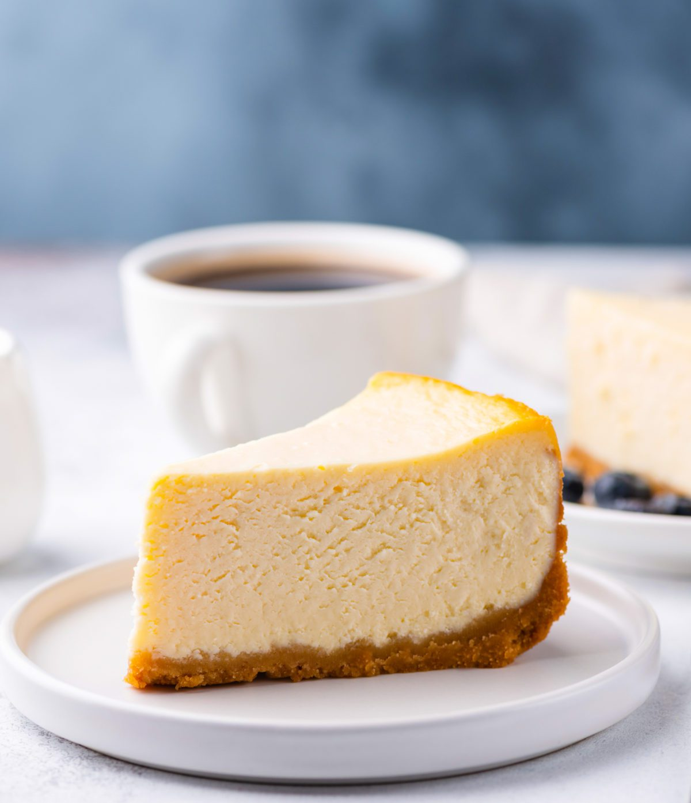

Cheesecake is a sweet dessert consisting of one or more layers. The main, and thickest, layer
consists of a mixture
of a soft, fresh cheese, eggs, and sugar. If there is a bottom layer, it most often consists of a crust or base made
from crushed cookies, graham crackers, pastry, or sometimes sponge cake.
- 1 3/4 cups Graham Cracker Crumbs
- 1/2 cups Butter, melted
- 1 1/4 cups Sugar
- 3(8 ounce) Cream Cheese
- 1 cup Sour Cream
- 2 teaspoons Vanilla
- 3 Eggs
- 1(21 ounce)Pie Filling (Optional)
- Heat oven to 350 degrees F.
- Mix graham crumbs, butter and 1/4 cup sugar; press onto bottom of 9-inch springform pan.
- Beat cream cheese and remaining sugar in large bowl with mixer until blended. Add sour cream and vanilla; mix
well. Add eggs, 1 at a time, beating on low speed after each addition just until blended. Pour over crust.
- Bake 1 hour to 1 hour 10 minutes, or until center is almost set. Run knife around rim of pan to loosen cake;
cool before removing rim. Refrigerate cheesecake 4 hours.
- Top with pie filling before serving.